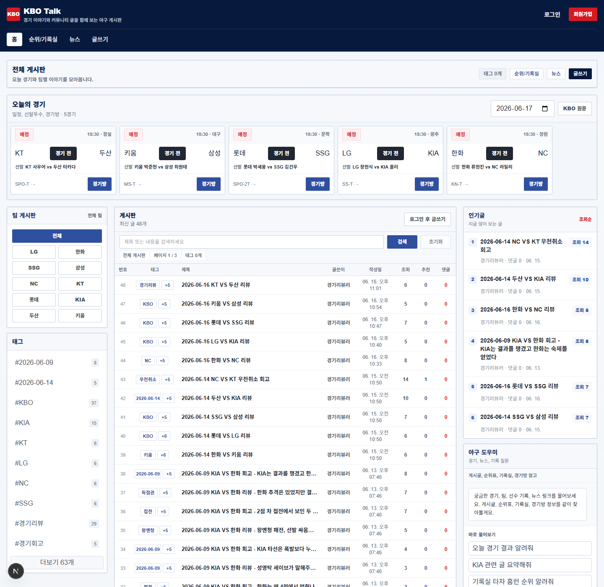

경기방 중심 구조
일정, 선발 투수, 라인업, 문자중계, 박스스코어, 관련 글을 경기 하나의 화면에 통합했습니다.
미디어사업팀 KBO 앱 서비스 기획 제출용
KBO 공식 서비스의 경기, 기록, 뉴스 정보를 팬 커뮤니티 사용 흐름으로 다시 묶고 웹과 Android 앱 프로토타입으로 구현한 서비스 개선 제안입니다.
Executive Summary
이 포트폴리오는 KBO 공식 앱을 대체하려는 서비스가 아니라, 공개된 공식 웹/모바일 화면과 앱스토어 정보를 바탕으로 팬이 경기 정보를 확인하고, 기록을 비교하고, 뉴스와 리뷰로 참여하는 흐름을 더 자연스럽게 만드는 개선 제안입니다.
Role Fit
Problem Definition
KBO 공식 서비스는 일정, 결과, 기록, 선수 정보, 뉴스 등 중요한 정보를 충분히 제공합니다. 다만 팬 입장에서는 한 경기를 기준으로 필요한 정보가 여러 메뉴에 흩어져 있다고 느낄 수 있습니다. 그래서 경기 전, 경기 중, 경기 후 사용 동선을 하나의 흐름으로 재배치했습니다.
Service Proposal
일정, 선발 투수, 라인업, 문자중계, 박스스코어, 관련 글을 경기 하나의 화면에 통합했습니다.
응원팀을 설정하면 관련 경기, 게시글, 뉴스, 활동을 먼저 확인할 수 있도록 앱 홈을 설계했습니다.
팀 순위와 타자·투수 기록을 분리해 팬이 선수 성적을 더 빠르게 비교할 수 있게 했습니다.
뉴스 URL을 브리핑하고 글쓰기 소재로 활용해 읽기 이후 행동으로 이어지게 만들었습니다.
Implementation
AI as Experience
화면에서는 RAG, MCP, Agent라는 기술명을 앞세우기보다 사용자가 실제로 이해하는 행동명으로 배치했습니다.
Evidence

웹 메인 화면에서 게시판, 오늘의 경기, 인기글, 기록/뉴스/경기방 진입점을 함께 확인할 수 있습니다.
Demo Script
Closing
이 프로젝트는 “KBO 앱을 어떻게 더 자주 쓰게 만들 수 있을까”, “경기 정보와 팬 참여를 어떻게 연결할 수 있을까”, “기획 문서를 실제 구현 가능한 요구사항으로 어떻게 바꿀 수 있을까”에 대한 개인적인 답변입니다. 공식 서비스 구조를 분석하고 팬 사용 흐름으로 다시 정리했으며, 개선 아이디어를 화면, API, DB 구조, 운영 지표까지 연결했습니다.